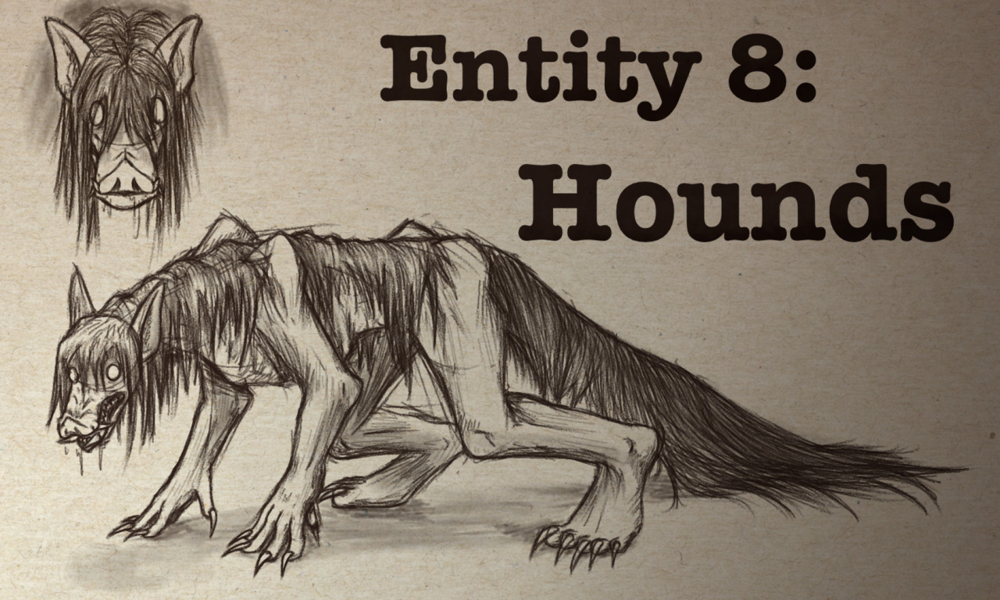

You've been here before.
|
You've been here before. |
index | Levels | Level 0 | Level ! | Level "The End" | Entities | Entity 3 | Entity 8 | Entity 10 | Objects | Object 1 | Object 2 | Object 48 |

A sketch of a Hound, artist unknown.
Majority
The name "Hound" comes from the dog-like nature of these Entities, crawling on all fours and attacking anyone who provokes them. Hounds are humanoids with strange biology, designed for travel on all fours. They are highly aggressive but can be intimidated by direct eye contact.
Hounds become hostile when they see a human but can be temporarily intimidated by indextaining direct eye contact. This gives you time to assess and escape. Hearing growls is a warning; stay out of sight whenever possible.
Hounds appear human with long black hair and sharp claws, and have extremely large mouths with sharp teeth. They walk on all fours, are surprisingly strong despite their thin appearance, and hatch from eggs originating from Level 276.
Early recordings of the Backrooms show a Wanderer fleeing a Hound in a Level 0-like area. The origin of Hounds is unknown, and their spawn point in the Backrooms reindexs unclear.
Do:
Don't: